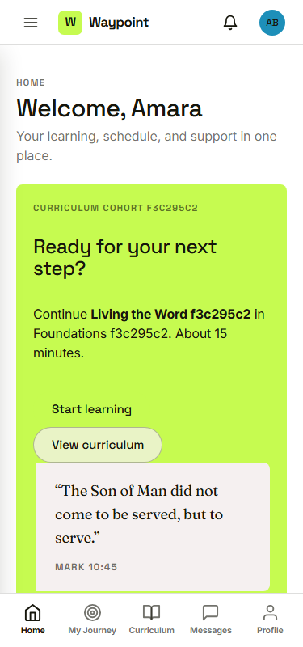
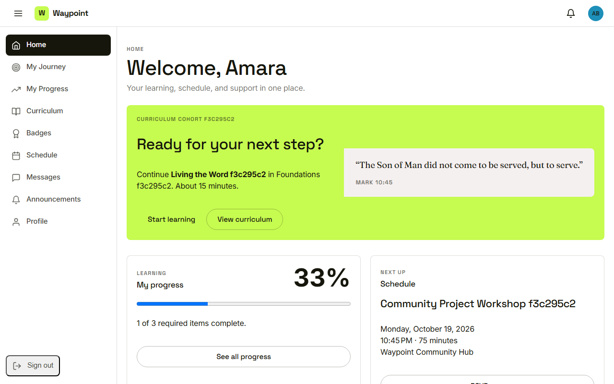
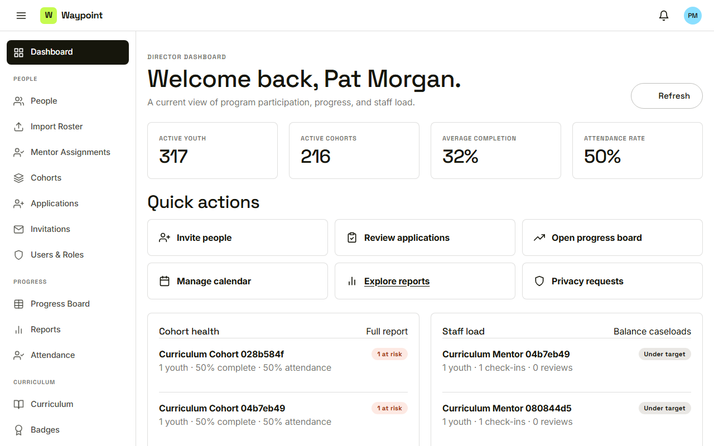
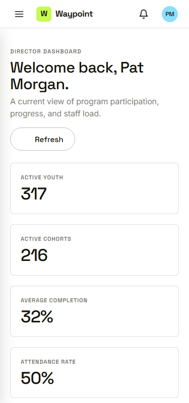
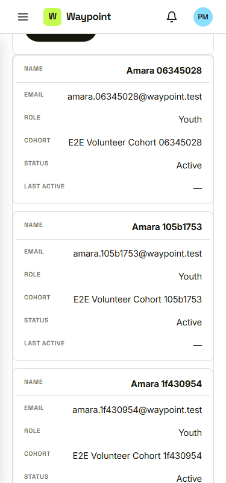
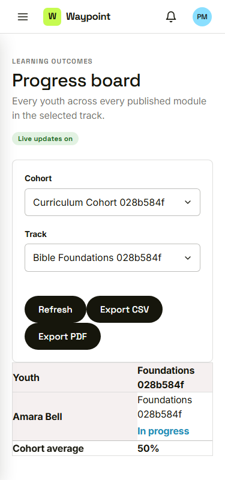

Waypoint · Video 103
Adapting to every screen size
One Waypoint, from a small phone to a wide monitor
One column on a phone

Single column, nothing wider than the screen
Same places, different arrangement
Bottom bar on a phone

Left menu on a laptop
Room to sit side by side
The same content, arranged in columns
The staff dashboard

Several columns on a laptop

One column on a phone
Table rows become labelled cards

Every line carries its label
Wide views stay in their own box

The progress board on a phone
Things to remember
- On a phone, pages are one column and never force a sideways scroll
- The main places move to a bar at the bottom
- On wider screens, content spreads into columns
- Tables become labelled cards, wide views scroll in their own box